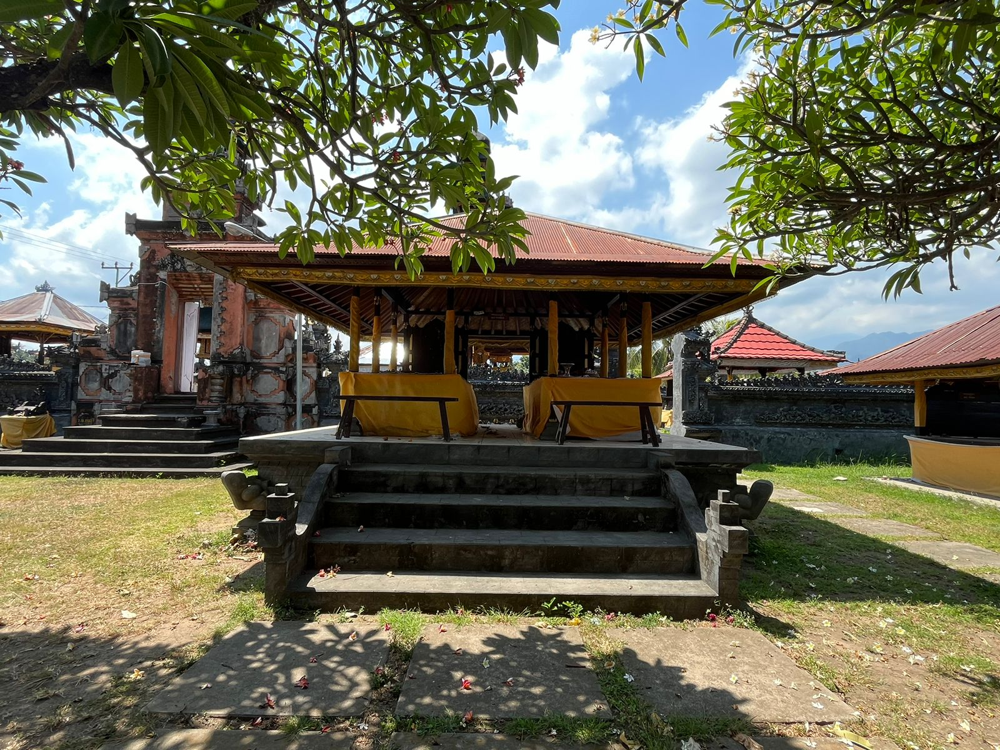
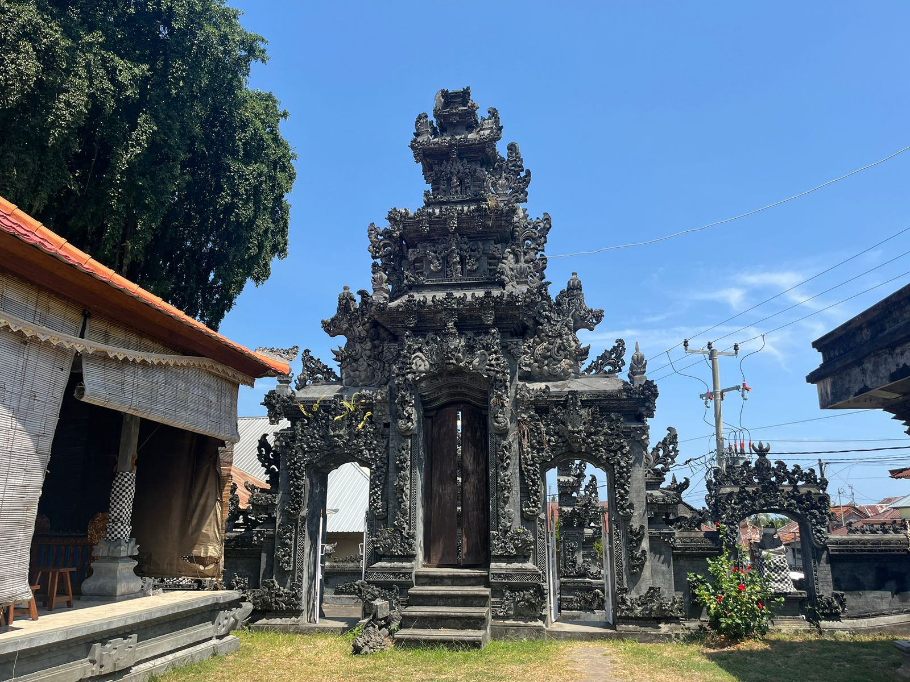

Similar to Pura Puseh, Pura Desa is one of three important temples in Bengkala village. Pura Desa, a traditional Bengkala village temple, is located in the middle of the village. The village temple is believed by the community to be the temple where the god Brahma rests, who according to Hindu beliefs, is the creator of this world. In this temple there are two Meru, the first Meru tumpang sia or nine which is intended for the Maharaja, then there is Meru which has eleven tumpang which is intended for the great priest, then there is pelinggih padmasana, then there is the idea betare kolok which is the ancestor of Bengkala village.
In addition, there is also an inscription that inaugurates Bengkala village as an independent traditional village which was inaugurated by the king of Bali at that time on June 22, 1181 AD. Since that day on June 22, the inscription has been read to commemorate the inauguration of Bengkala village as an independent traditional village. The prohibitions when entering this village temple are women who are menstruating, babies who are not yet 6 months old will still take place, odalan will still take place when a villager dies but for families who have obstacles are not allowed to enter the temple area. Before these three temples, in Bengkala village there was one of the oldest temples in Bangkala village, namely Bantas temple, where this temple is only in the form of a rock. It is said that this temple cannot be fenced with walls or concrete, this temple can only be fenced with plants. The community believes that if a married couple does not have children, they are advised to ask for children on Bangtas Island. Bantas temple is located on the border between Bengkala village and Bungkulan village.
When returning an item, you may be responsible for the return shipping costs unless the return is due to an error on our part, such as a defective or incorrect item sent. We recommend using a trackable shipping method and retaining the shipping receipt as proof of shipment.